Kimobetsu
Kimobetsu · Hokkaido
Kimobetsu
Highlighted on the Hokkaido map.
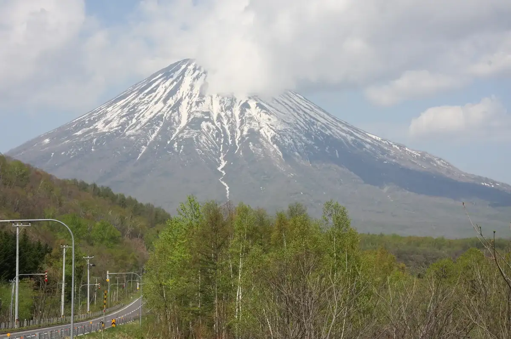
Stay
Rusutsu Ski&Snow Family Lodge 66
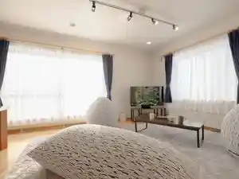
Rusutsu Ski&Snow Family Lodge 66
ルスツグランドキャビン
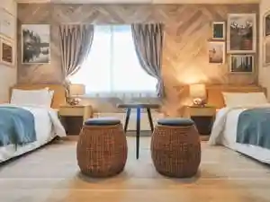
Rusutsugurandokyabin
Dining
焼肉牛牛
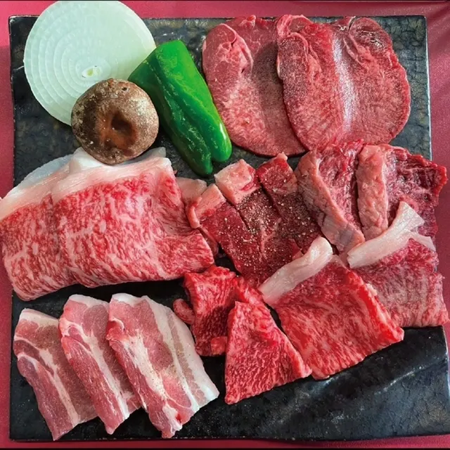
Yakiniku Ushi Ushi
チーズ工房 タカラ
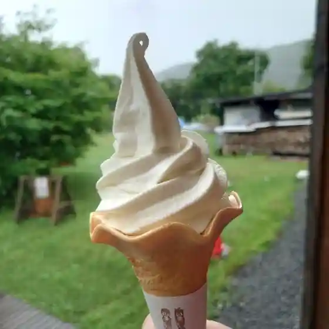
Chiizu Koubou Takara
moving kitchen CIERVO
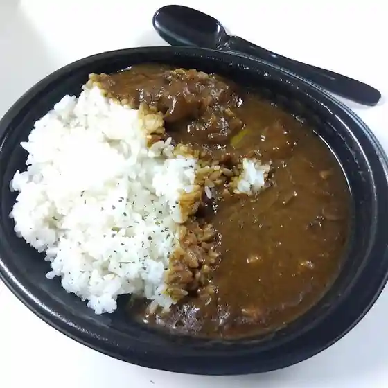
Moving Kitchen Ciervo
ふさまる食堂 中山峠 総本店
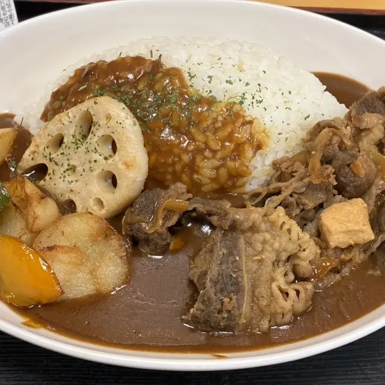
Fusamaru Shokudou Nakayamatouge Souhonten
藤田菓子舗
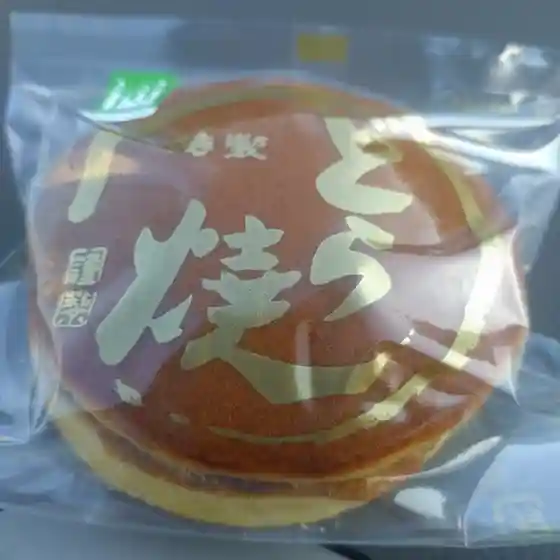
Fujita Kashi Ho
Kiko図
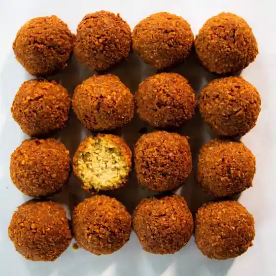
Kiko Zu
ポテトインパパ
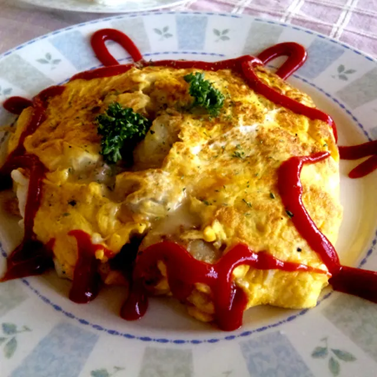
Potetoinpapa
三幸食堂
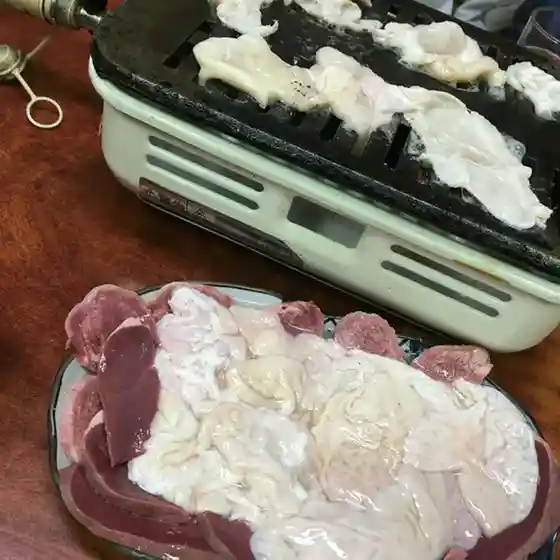
Mitsuyuki Shokudou
セイコーマート 喜茂別店
Seikoomaato Kimobetsu Mise
チャースタ
Chaasuta
久保田農産物直売所
Kubota Nousanbutsu Chokubai Tokoro
カフェ ベルク
Kafe Beruku
AeR
Aer
雪月花廊
Yuki Gekka Rou
ティーガーデン
Teiigaaden
ソーケシュ製パン×トモエコーヒー
Sookeshu Seipan X Tomoekoohii
かねき食堂
Kaneki Shokudou
居酒屋 焚
Izakaya Fun
手打ちそば もも木
Teuchi Chisoba Momo Ki
道の駅 望羊中山
Michi No Eki Bou Hitsuji Nakayama
なかむら屋
Nakamura Ya
西村農園
Nishimura Nouen
コーヒー&シェアスペース チグリス
Koohii & Shieasupeesu Chigurisu
郷の駅 ホッときもべつ
Sato No Eki Hotsu Tokimobetsu